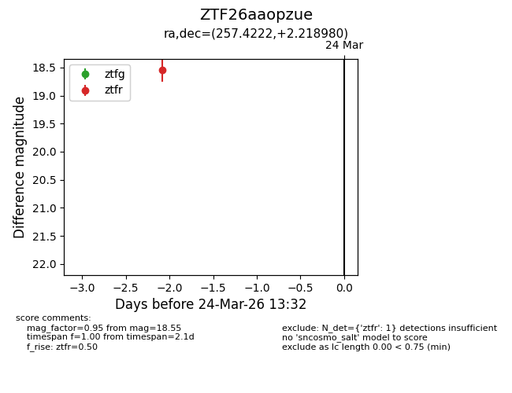
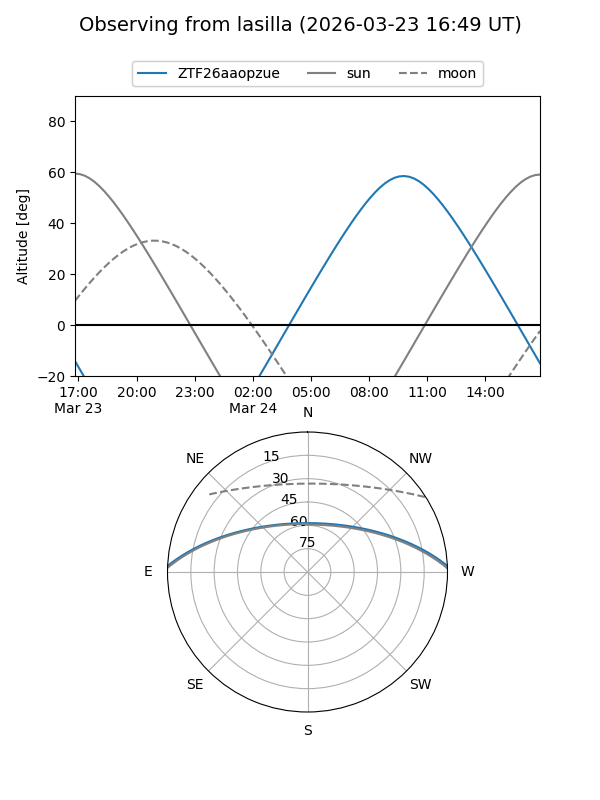
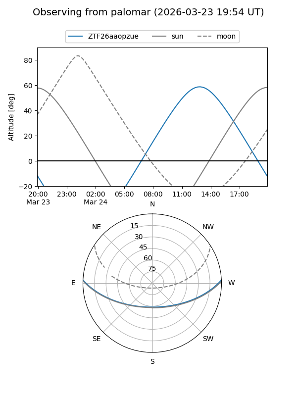

ZTF26aaopzue
Target ZTF26aaopzue at 2026-03-24 13:35
Aliases and brokers:
FINK: link
Lasair: link
ALeRCE: link
alt names
ZTF26aaopzue (ztf,fink_ztf)
Coordinates:
equatorial (ra, dec) = 257.4222,+2.21898
equatorial (HMS+DMS) = 17:09:41.34,+02:13:08.33
galactic (l, b) = (22.8005,+23.55556)
Flags:
Photometry:
last ztfr=18.55
1 ztfr detections
Lightcurve

Visibility


Additional plots